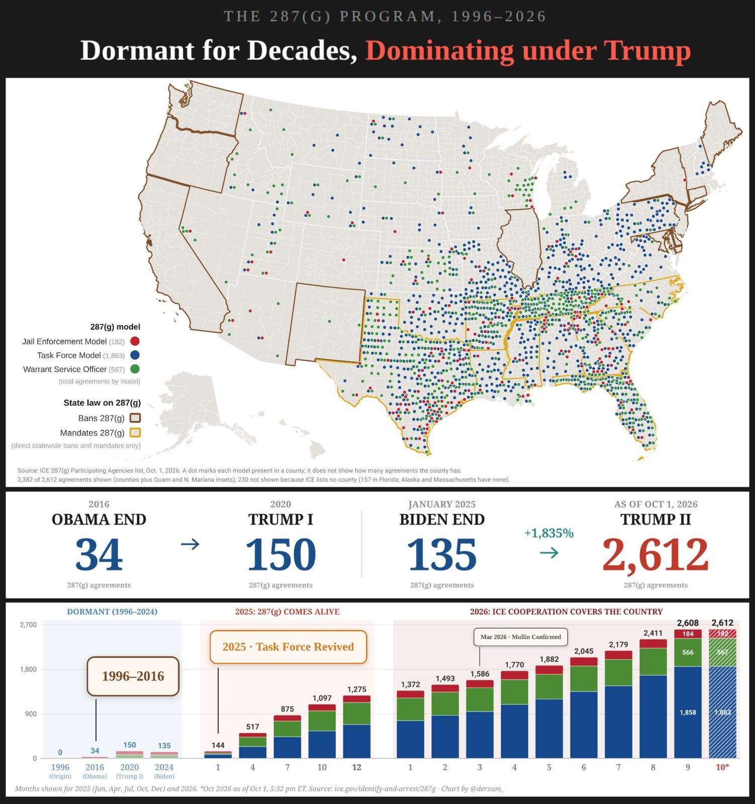
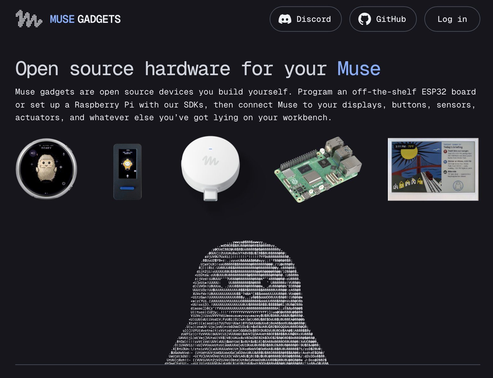

🚨BREAKING: Trump Admin Weaponizes the IRS for MASS DEPORTATIONS: Thanks to work originally conducted by the DOGE, it has been discovered that between January 2021 and January 2025, the Biden Administration issued 3.92 million Social Security numbers to illegal aliens and legal noncitizens. Now, after a recent victory in the D.C. Circuit, Trump’s Department of Homeland Security can use IRS records to check legal status and facilitate deportations. Ironically, this D.C. Circuit victory allows the Trump Administration to use the Biden Administration’s 3.92 million Social Security numbers as 3.92 million targets with which to identify and deport illegal aliens. The Trump Administration is also currently moving to require taxpayers and federal credit recipients to report their immigration status when filing with the IRS, further pressuring illegal aliens attempting to operate financially inside the United States. Follow: @MorseReport
Introducing XRP Asia
Asia has long been one of the most important regions for the XRP Ledger (XRPL)
It is home to some of the world’s most active digital asset markets, a deep base of developers and technology companies, and some of the most engaged XRP communities anywhere.
Now, that ecosystem is getting dedicated regional support.
XRP Asia is a new organization focused on growing the ecosystem across Asia-Pacific, supporting builders, startups and communities through dedicated programs, resources and events.
The vision is to make XRPL the go-to blockchain for builders across Asia and for the region to become a major engine of growth and adoption for the broader XRP ecosystem.
Jointly founded by @Ripple and the XRP Ledger Foundation (@XRPLF), XRP Asia is led by Sabrina Tachdjian (@Sabrina_XRPAsia) and focused on strengthening the connections, resources and pathways that can help the ecosystem grow.
Sabrina brings deep experience across the digital asset industry, including leading APAC and Fintech/Payments at the Hedera Foundation and previously heading blockchain investments at LINE. Her experience working with builders, startups and industry partners across Asia will help shape XRP Asia’s approach to supporting and growing communities throughout the region.
Becoming a hub for communities in the region
The creation of XRP Asia comes as XRPL is gaining significant momentum globally and ecosystem support needs are growing. This is also an acknowledgement of the strategic significance of the region, home to key digital asset markets and builder hubs.
Asia has been part of the ledger’s story from the early days. A significant share of XRPL developers are based in the region, institutional adoption continues to grow, and some of the world’s most committed XRP communities are here.
Headquartered in Singapore, XRP Asia will build on two vibrant existing communities, XRPL Korea and XRPL Japan, while helping establish and support new communities across major Asian cities and development hubs.
Onboarding builders to XRPL
XRP Asia will develop scalable XRPL learning resources designed to make acquiring the skills to build on XRPL as accessible and frictionless as possible.
Training will also extend to system integrators and development shops through a new SI Partnership Program. With Asia home to a significant share of the world’s SIs and development firms, the region is a natural place to launch the initiative.
XRP Asia will also run and support hackathons, giving newly onboarded developers opportunities to put those skills into practice.
Support won’t stop when the hackathon ends. Builders will have continued access to office hours, ship-it clinics and other programming offered at APAC-friendly time zones.
Supporting startups at every stage of growth
Beyond technical support, XRP Asia will provide go-to-market assistance to startups building on XRPL.
That includes helping founders navigate XRPL-enabled infrastructure and service providers, facilitating partner introductions, and connecting teams with incubation and grant programs available across the broader XRPL ecosystem.
As startups grow, XRP Asia will also help amplify founder stories, support joint events and facilitate relevant investor introductions.
Get involved
We’re at the beginning of a long journey, and we want the community to help shape what comes next.
If you are a builder, community member, potential partner or simply want to stay in the loop, visit xrpasia.org to hear about programs as they launch.
Follow @XRPAsiaOfficial on X for updates.
We welcome ideas and constructive feedback on how XRP Asia can best support XRPL builders and communities across the region.
LATEST: 📊 Visa says payments volume across its stablecoin-linked card programs has grown nearly 200% YoY, with ~17% of that volume now coming from business and commercial card programs.
ICYMI: 💰 SBI Holdings has completed its full acquisition of Japanese crypto exchange Bitbank, which is now a wholly-owned subsidiary of the financial conglomerate.
Crypto adoption seems fast now. But it will never be this slow again.
🚨NEW: The Trump Administration has uncovered 6 forms of fraud in the Unaccompanied Alien Children Program that occurred during the Biden Administration.
Between October 2023 and October 2024, the Office of Refugee Resettlement received 1,669 reports of sponsor-related fraud within the UAC Program. ORR reviewed these cases and found that the average rate of intentional document or information fraud exceeded 75%.
So far, ORR has identified fraud in the previous administrations UAC Program in the forms of: ❌Fraudulent documentation of identity ❌Manipulated photographs ❌Address fraud ❌Fingerprint fraud ❌Failure by potential sponsors to fully disclose household members ❌And unaccompanied children misrepresenting their age
Learn more about what the investigation uncovered:
Social Adult Day Care Owner Pleads Guilty to $65M Medicaid Fraud
There are now more than 2,600 local and state agency agreements with ICE across the country, up from 135 before Trump, a 1,835+% increase.
More than 1,860 agencies have joined the Task Force Model to arrest illegal aliens, covering several red states, up from 0 before Trump.

🚨 MUSE ECOSYSTEM ALERT 🚨
today we are announcing Muse Gadgets!
this is an open-source ESP32 firmware and Linux SDK for anyone to make hardware that works with Muse
we are also releasing our own gadget—Muse Home Link—to enable your muse to work with your smart devices (TV, speakers, etc.)

our entire reality is now under question
new study examines as ai detection gets better and better, its finding synthetic data further back in time on a linear scale
it now suggests a lot of the early 2000's were generated even extending into the 1990s including Nirvana
Super Intelligence (fka AI) is now acing accounting tests
AN ILLEGAL ALIEN WITH A 17-ARREST RAP SHEET, AN ICE DETAINER, AND KATHY HOCHUL STILL LETS HIM WALK
A Guatemalan national that the DHS says is in the country illegally was arrested twice in an 18-hour span in Putnam County.
First, he was allegedly involved in a robbery and assault at a convenience store. Then, after being released, he was allegedly arrested again the same day for forcibly touching a woman on a Metro-North train platform.
A man with a reported 17 arrests in two years, eight convictions, pending charges across multiple categories, and an ICE detainer should not have been free to find another victim.
Yet in Kathy Hochul’s New York, the rights of repeat offenders are treated with more urgency than the safety of the public.
It doesn't have to be this way. Change is possible.
America is building BIG again 🇺🇸
Shovels are officially in the ground for the I-10 Mobile River Bridge & Bayway Project
Once the largest infrastructure project in Alabama’s history is finished, drive times will be cut by up to 30 minutes‼️
Under POTUS’s leadership, we don’t wait on progress — WE BUILD IT @USDOTFHWA
Trump refuses to turn his camera on at the G7 summit
No more band-aids.
We rebuilt the FBI’s technology backbone.
2–3 AI use cases ➡️ 140+.
Tips that once took DAYS to move through the system can now be ingested, analyzed, and pushed to our field teams immediately.
AI doesn’t replace our people — it gives them SPEED and SCALE.
China, Russia, terrorists, cyber criminals: we’re upgrading the fight.
The FBI is moving faster because the threats aren’t slowing down.
-🇺🇸 DKP
"South Korea says they have not signed off on this Alaska pipeline..."
@POTUS: "That's okay with me, I'll just charge them more... They said they didn't sign off? Tell them if they don't sign shortly, I'm gonna double it up."
.@POTUS: "I asked for it. Europe has a lot of diesel and they're going to be making a major world contribution — and so are we."
Three words. Eleven letters.
FAKE NEWS CNN. 🗣️
Jack Smith & his team broke the rules to throw the book at Pres Trump & put a target on the backs of GOP supporters This bad faith approach to the rule of law gave the Biden Dept of Justice a black eye + erodes public confidence in govt institutions
BREAKING: Russia urges all foreign diplomats to immediately leave the city of Kyiv.
Education Department shifts roles to other agencies, further shrinking the agency